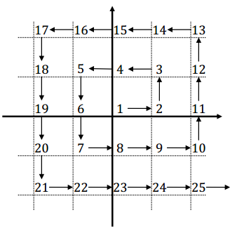

Long vẽ một mặt phẳng Descartes và chơi một trò chơi điền số vào các tọa độ nguyên. Cậu xuất phát từ gốc tọa độ và lần lượt điền các con số tăng dần theo ngược chiều kim đồng hồ. 25 con số đầu tiên được điền như hình bên dưới.

Bạn hãy cho biết tại vị trí có tọa độ (x, y), x là trục ngang, y là trục dọc, Long sẽ điền con số là bao nhiêu.
Dữ liệu vào:
Gồm hai số nguyên x và y, (0<= x, y <= 100). x và y cách nhau một khoảng trắng.
Dữ liệu ra:
Gồm một số duy nhất cho biết giá trị tại tọa độ (x, y)